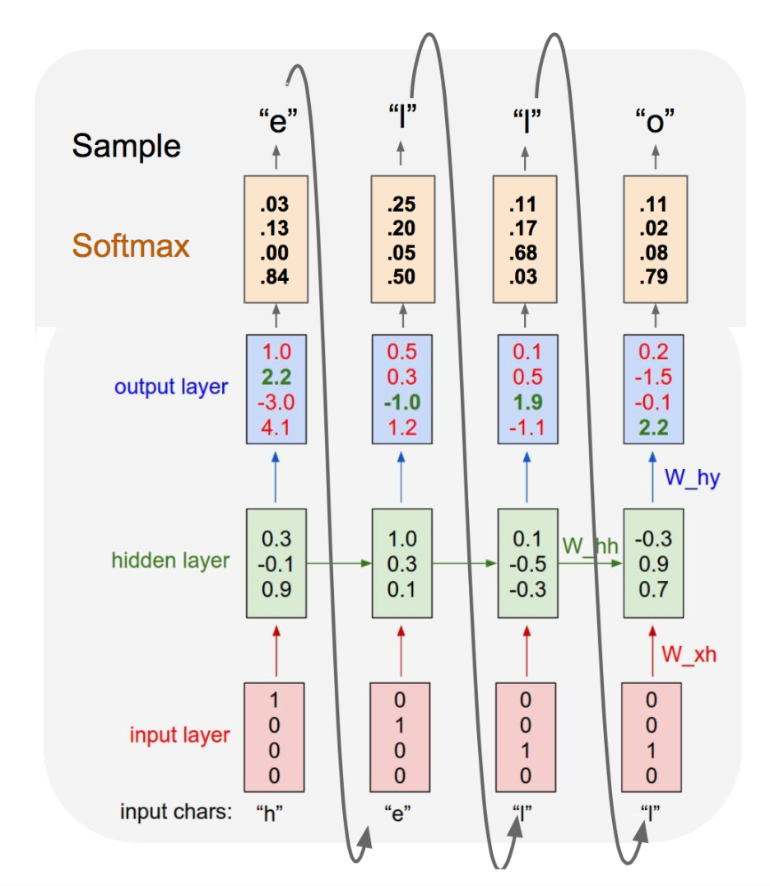

YUFENG CHI (-T.K.-)
The High School Affiliated to Renmin University of China, International Curriculum Center
tk.fantasy.233@gmail.com
- Can NAI learn Mr. Bach's music?
- Yes, of course.
A recurrent neural Network is a type of artificial neural network. The connections between nodes form a directed graph along a sequence. Different from the feedforward neural networks, RNNs can use their internal state to memory sequences. Thus, it has the ability to discover patterns with respect of time and can generate similar patterns accordingly. The structure is shown in the image below.
From this website, we can obtain all the piano works located inside the The English Suites page.
The file is downloaded as a zip format with 48 midi files inside. 480KB or 98 minutes in total.
Midicsv.exe is a handy tool to convert midi into csv file. This is its official website.
Via the os.system() command, we can run it inside python.
import os
os.system(".\\Midicsv.exe .\\the-midi-file.mid .\\target-csv-file.csv)
Though we get the character representation of the music, there is a lot of redundant information:
... 2, 2160, Note_on_c, 0, 81, 107 2, 2400, Note_on_c, 0, 76, 107 2, 2520, Note_on_c, 0, 73, 107 2, 2880, Note_on_c, 0, 69, 107 2, 2976, Note_on_c, 0, 81, 0 2, 3000, Note_on_c, 0, 80, 107 2, 3072, Note_on_c, 0, 76, 0 ...
A new format is needed that can:
Inspired by carykh , Unicode characters can be used to represent each note.
Encoding process is shown below:
# make a temp folder to store csv files
def make_temp_folder():
try:
os.makedirs(temp_path)
except:
shutil.rmtree(temp_path)
os.makedirs(temp_path)
# convert csv string into compressed character-level string
def encode(csv_string, params):
score = []
# reformat csv array
for row in csv_string:
if len(row) < 6 or not re.search('[N|n]ote', row[2]):
continue
tick = int(int(row[1]) / params.sample_rate)
note = int(row[4])
on_off = not(re.search('[O|o]ff', row[2]) or int(row[5]) is 0)
score.append([tick, note, on_off])
# sort the array by midi tick
score.sort()
keys = []
result_str = ''
for t in range(0, tick+1):
for note in score:
if note[0] == t:
note_chr = chr(note[1] + params.offset)
if note[2] and note_chr not in keys:
keys.append(note_chr)
if not note[2]:
if note_chr in keys:
keys.remove(note_chr)
for key in keys:
result_str += key
if not keys:
result_str += '~'
result_str += ' '
return result_str
Now we have a train.data file. Though it is 'compressed', it's now 2.7MB. :D
Implementing the char-rnn-tensorflow by sherjilozair, a model with 1.1378 perplexity on validation can be obtained.
The hyperparameters are shown below:
data_file = ".\\train.data"
encoding = 'utf-8'
output_dir = ".\\output\\"
n_save = 1 # how many times to save the model during each epoch.
max_to_keep = 3 # how many recent models to keep
hidden_size = 256 # size of RNN hidden state vector
embedding_size = 0 # size of character embeddings
num_layers = 3 # number of layers in the RNN
num_unrollings = 20 # number of unrolling steps.
model = 'lstm' # which model to use (rnn, lstm or gru).
num_epochs = 200 # number of epochs
batch_size = 40 # minibatch size
train_frac = 0.9 # fraction of data used for training.
valid_frac = 0.05 # fraction of data used for validation.
# test_frac is computed as (1 - train_frac - valid_frac).
dropout = 0.4 # dropout rate, default to 0 (no dropout).
input_dropout = 0.0 # ('dropout rate on input layer, default to 0 (no dropout), and no dropout if using one-hot representation.
max_grad_norm = 5 # clip global grad norm
learning_rate = 3e-3 # initial learning rate
decay_rate = 0.95 # decay rate
init_dir = ''
init_model = ''
log_to_file = debug = test = False
progress_freq = 100 # frequency for progress report in training and evalution.
verbose = 1 # whether to show progress report in training and evalution.
Another piece of code is needed to decode the data and convert them back into midi format:
def decode(string, params):
make_temp_folder()
if re.search('.data', string):
with open(string, encoding='utf-8') as f:
string = f.read()
content = string.split(' ')
if not re.search('.mid', params.output_name):
params.output_name += '.mid'
csv_name = os.path.join(temp_path, params.output_name.replace('.mid', '.csv'))
with open(csv_name, 'w', newline='', encoding='utf-8') as csvfile:
writer = csv.writer(csvfile, delimiter=',')
# write the headers required for the midi file
writer.writerow([0, 0, 'Header', 1, 4, 240])
writer.writerow([1, 0, 'Start_track'])
writer.writerow([1, 0, 'Title_t', '"Piano Improvisation - NAI"'])
keys = []
for t, chap in enumerate(content):
if chap is '~':
continue
for note in chap:
if note not in keys:
keys.append(note)
writer.writerow([1, t * params.sample_rate, 'Note_on_c', 0, ord(note)-params.offset, 107])
for key in keys:
if key not in chap:
keys.remove(key)
writer.writerow([1, t * params.sample_rate, 'Note_off_c', 0, ord(key)-params.offset, 0])
writer.writerow([1, t * params.sample_rate, 'End_track'])
writer.writerow([0, 0, 'End_of_file'])
os.system(".\\dependencies\\Csvmidi.exe " + csv_name + " .\\" + params.output_name)
shutil.rmtree(temp_path)import csv
import os
import re
import time
SAMPLE_RATE = 10
def cvt_chrmid_2_csv(filename, filename_out):
file = open(filename, encoding='utf-8')
string = file.read()
file.close()
string = string.split(' ')
keys = []
prev_keys = []
t = 0
with open('result\\'+filename_out, 'w', newline='') as f:
writer = csv.writer(f)
writer.writerow([0, 0, 'Header', 1, 4, 240])
writer.writerow([1, 0, 'Start_track'])
for line in string:
if re.search('~', line):
t += SAMPLE_RATE
continue
for note in line:
if note not in keys:
keys.append(note)
if 0 <= ord(note) <= 127:
writer.writerow([1, t, 'Note_on_c', 0, ord(note), 107])
for note in keys:
if note not in line:
keys.remove(note)
if 0 <= ord(note) <= 127:
writer.writerow([1, t, 'Note_off_c', 0, ord(note), 0])
t += SAMPLE_RATE
writer.writerow([1, t, 'End_track'])
writer.writerow([0, 0, 'End_of_file'])
def cvt_csv_2_midi(filepath):
time.sleep(4)
csv_list = list(os.walk(filepath))[0][2]
for csv in csv_list:
midi = csv.replace('.csv', '.mid')
os.system("tool\Csvmidi.exe .\\result\\"+csv+" .\\result\\"+midi)
cvt_chrmid_2_csv('output.txt', 'result.csv')
cvt_csv_2_midi('result')
Here is the final result
The result is acceptable.
The network discovers the pattern of chords and beats. Though, the transitions between blocks are not smooth enough.
carykh. (2017). Computer evolves to generate baroque music! Youtube. [Online]. Available: https://www.youtube.com/watch?v=SacogDL_4JU&t=2s
Karpathy, A. (2015). The Unreasonable Effectiveness of Recurrent Neural Networks. Andrej Karpathy blog. [Online]. Available: http://karpathy.github.io/2015/05/21/rnn-effectiveness/